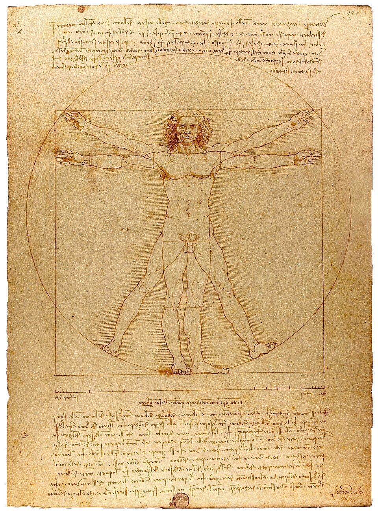

A web adaptation of The Elements of Typographical Style
Authored by Oskar Wickström. v0.1.0, licensed under MIT.
Two summers ago, just before I started working at TigerBeetle, I picked up a new side project during downtime. I’ve always had a soft spot for CSS but I don’t know why; frankly, it’s weird, confusing, and infamously error-prone. It could be nostalgia from my early days of programming web applications, or Stockholm Syndrome after years of captivity. Whatever the cause, The Monospace Web was born out of that love, and it took off way harder than I ever thought it would, with many personal blogs and even application interfaces having adopted it.
So, here I am again, spending weekend off-hours in a form of meditative state writing CSS for no purpose at all. This time, inspiration struck after reading Robert Bringhurst’s classic The Elements of Typographic Style. A challenge indeed, trying to implement the layout and typography of the book itself in the browser. Reckless, some might say! Surely the same rules don’t apply across print and web, and any such attempt is vanity or misguided nostalgia. Perhaps, perhaps not. I’ve decided to publish regardless, and bid you to take from it what you will; if you find it pleasant or useful, that’s a wonder, and if you find it cursed or pointless, you may leave it aside and enjoy the abundance of silver-gradient sans-serif on purple, or why not the dual-line slop-serif marketing pages, with which we are bestowed.
Consider this the spiritual and variable-width successor of The Monospace Web, and equally open for reuse. I’m a sucker for Pandoc, but it should work in many other settings with minor tweaks.
Typography is the craft of endowing human language with a durable visual form.
In this document and its design, I’m using two variants of the Alegreya font. The regular variant is used for body text and third-level headings. Its small-caps variant, Alegreya SC, is used for titling-caps top-level headings, small-caps second-level headings, and for inline abbreviations such as HTML. Finally, Courier Prime is used for monospace code snippets.
Bringhurst argues in his book for choosing a single versatile typeface rather than a hodgepodge of different ones. I think Alegreya is such a choice, and an excellent one at that.
Every size is based on the root font size, which is 16px. Sizes are
thus given in rem units, relative to the root font size.
The following table shows how fractional, rem, and pixel
measurements correlate.
| a | a | a | a | a | a | a | a | a | a | a |
| 3/4 | 7/8 | 1 | 9/8 | 5/4 | 11/8 | 3/2 | 2 | 5/2 | 3 | 4 |
| 0.75 | 0.875 | 1 | 1.125 | 1.25 | 1.375 | 1.5 | 2 | 2.5 | 3 | 4 |
| 12 | 14 | 16 | 18 | 20 | 22 | 24 | 32 | 40 | 48 | 64 |
rem units,
along with their px equivalents.
Sizing everything based on the root font size makes it easy to scale the design, for instance on smaller viewports:
@media screen and (max-width: 480px) {
:root {
font-size: 14px;
}
}The line height is 1.2rem, and is used as the basis for vertical alignment of all elements. Much like in The Monospace Web — but not to the same extremes — I’ve tried to get everything globally aligned to multiples of the line height.
As in the book, body text is justified, not ragged right. To some,
this is grave heresy on the web. Thou shalt not justify. That’s
what we’ve all been taught. But browsers have improved over time and
today it’s not unthinkable to justify text. This stylesheet uses
word-break and hyphens to control how words
are broken and hyphenated at line breaks. The
hyphenate-limit-chars attribute is useful to control the
bounds of hyphenation.
In keeping with tradition, each successive paragraph is indented 3ch, which is the width of three 0 (0x30) characters. As an example, the paragraph following this one leads with an indent.
This lets your eyes more easily scan the structure of the text and find the starts and ends of paragraphs. We’ve done this in print text for at least half a millennium, and while the web has largely settled on no indent and vertical space between paragraphs, it is still a valid approach.
You may have noticed that this design is devoid of color. It’s all black on white. Not only am I personally inclined towards this minimalism in prose-heavy documents, at least as a strong default that I depart from only with careful consideration, but it’s also what Bringhurst argues in his book, although with print media in mind. I find it aesthetically pleasing and easier on the eyes, and it reserves the arsenal of color, and thus the attention of the reader, for the most critical things, such as diagrams conveying complex data.
This document uses a few extra classes here and there, but mostly it’s just semantic HTML5 markup. This, for instance, is a regular paragraph. The examples below are indented for clarity; in normal use they’d span the full width of the text.
There’s no surprise here; text in <em> tags is
italicized, just as you’d expect:
Do you think I can stay to become nothing to you?
There’s no clear guidance on horizontal line breaks in Bringhurst’s book, but it seems to me like a good place for ornamentation. Here’s one:
The symbol used is U+2767 Rotated Floral Heart Bullet from the Unicode Dingbats block.
We can hide stuff in the <details> element. Click
the label below:
Hidden gems.
The book uses plenty of side notes. In HTML we define
those using <aside> elements. Along with this
paragraph there’s a side note. With a large enough viewport, you’ll see
it in the right margin; with a smaller viewport, it’ll be collapsed into
an inline paragraph with ornamentation.
Proper nouns and place names are wrapped in
<span class="name">, rendered as small-caps much like
in the example from the book:
… on the islands of Lombok, Bali, Flores, Timor and Sulawesi, the same textiles …
Bringhurst talks about various ways of typesetting quotations, and the one I landed on is using an indented block, italic quote text, and a footer with author, work, and year.
Je n’ai fait celle-ci plus longue que parce que je n’ai pas eu le loisir de la faire plus courte.
Images with captions are put in <figure> and
<figcaption> elements, respectively. Similar to
blockquotes, author and work are styled specifically
using small-caps and italic text.

This is a plain old bulleted list:
Ordered lists look pretty much as you’d expect:
Tabular data is presented with a strong table head, using small-caps labels and a border. Otherwise it’s very simple, relying only on spacing.
| Name | Dimensions | Position |
|---|---|---|
| Boboli Obelisk | 1.41m × 1.41m × 4.87m | 43°45′50.78″N 11°15′3.34″E |
| Pyramid of Khafre | 215.25m × 215.25m × 136.4m | 29°58′34″N 31°07′51″E |
:root {
--font-family: "Alegreya", serif;
--line-height: 1.2;
--border-thickness: 1.5px;
--text-color: #000;
--background-color: #fff;
}